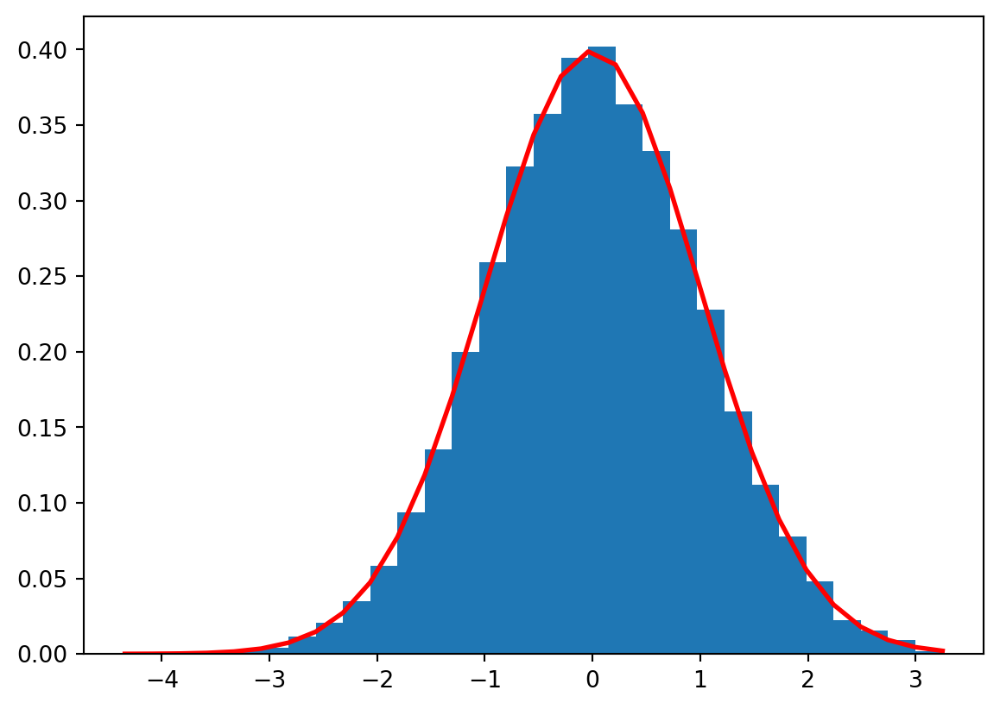
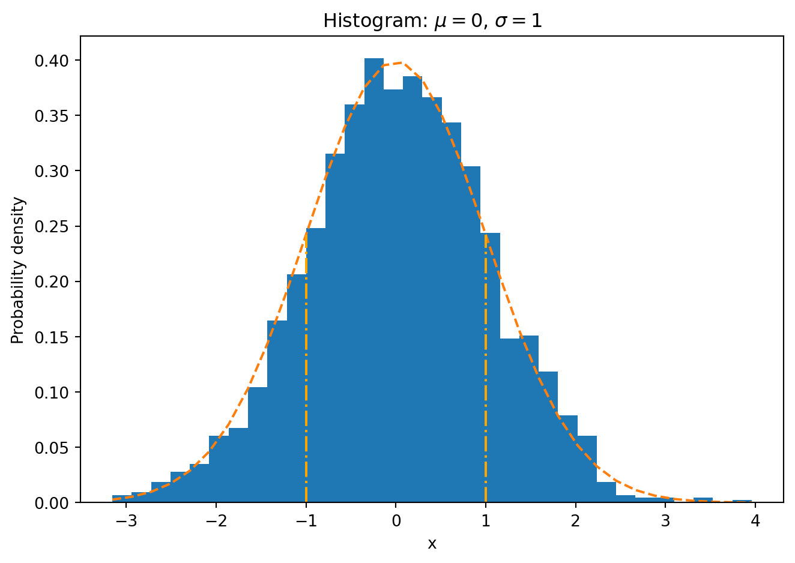
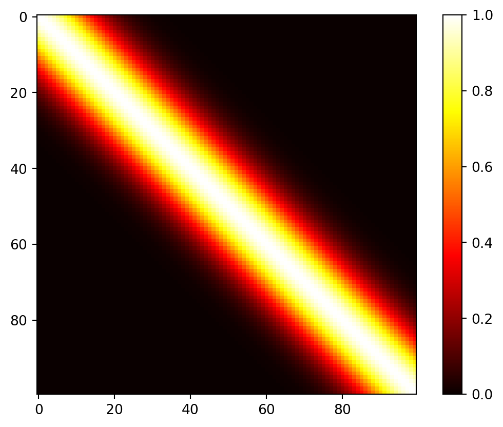
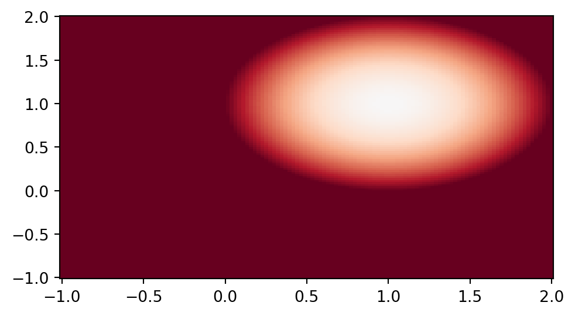
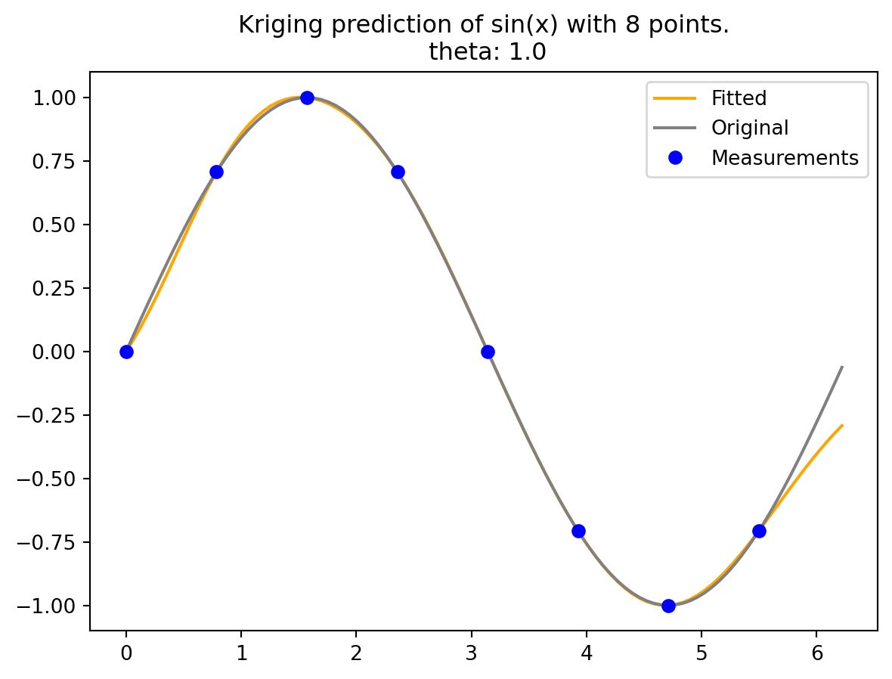

import numpy as np
a = np.array([[1, 2, 3]])
np.std(a)0.816496580927726Mathematical models implemented in computer codes are used to circumvent the need for expensive field data collection. These models are particularly useful when dealing with highly nonlinear response surfaces, high signal-to-noise ratios (which often involve deterministic evaluations), and a global scope. As a result, a new approach is required in comparison to Response Surface Methodology (RSM).
With the improvement in computing power and simulation fidelity, researchers gain higher confidence and a better understanding of the dynamics in physical, biological, and social systems. However, the expansion of configuration spaces and increasing input dimensions necessitates more extensive designs. High-performance computing (HPC) allows for thousands of runs, whereas previously only tens were possible. This shift towards larger models and training data presents new computational challenges.
Research questions for DACE (Design and Analysis of Computer Experiments) include how to design computer experiments that make efficient use of computation and how to meta-model computer codes to save on simulation effort. The choice of surrogate model for computer codes significantly impacts the optimal experiment design, and the preferred model-design pairs can vary depending on the specific goal.
The combination of computer simulation, design, and modeling with field data from similar real-world experiments introduces a new category of computer model tuning problems. The ultimate goal is to automate these processes to the greatest extent possible, allowing for the deployment of HPC with minimal human intervention.
One of the remaining differences between RSM and DACE lies in how they handle noise. DACE employs replication, a technique that would not be used in a deterministic setting, to separate signal from noise. Traditional RSM is best suited for situations where a substantial proportion of the variability in the data is due to noise, and where the acquisition of data values can be severely limited. Consequently, RSM is better suited for a different class of problems, aligning with its intended purposes.
Two very good texts on computer experiments and surrogate modeling are Santner, Williams, and Notz (2003) and Forrester, Sóbester, and Keane (2008). The former is the canonical reference in the statistics literature and the latter is perhaps more popular in engineering.
The distribution of a random vector is characterized by some indexes. One of them is the expected value, which is defined as \[ E[X] = \sum_{x \in D_X} xp_X(x) \qquad \text{if $X$ is discrete} \] \[ E[X] = \int\limits_{x \in D_X} xf_X(x)\mathrm{d}x \quad \text{if $X$ is continuous.} \]
The mean, \(\mu\), of a probability distribution is a measure of its central tendency or location. That is, \(E(X)\) is defined as the average of all possible values of \(X\), weighted by their probabilities.
Let \(X\) denote the number produced by rolling a fair die. Then \[ E(X) = 1 \times 1/6 + 2 \times 1/6 + 3 \times 1/6 + 4 \times 1/6 + 5 \times 1/6 + 6\times 1/6 = 3.5. \]
The sample mean is an important estimate of the population mean. The sample mean of a sample \(\{x_i\}\) (\(i=1,2,\ldots,n\)) is defined as \[\overline{x} = \frac{1}{n} \sum_i x_i.\]
If we are trying to predict the value of a random variable \(X\) by its mean \(\mu = E(X)\), the error will be \(X-\mu\). In many situations it is useful to have an idea how large this deviation or error is. Since \(E(X-\mu) = E(X) -\mu = 0\), it is necessary to use the absolute value or the square of (\(X-\mu\)). The squared error is the first choice, because the derivatives are easier to calculate. These considerations motivate the definition of the variance:
The variance of a random variable \(X\) is the mean squared deviation of \(X\) from its expected value \(\mu = E(X)\). \[\begin{equation} Var(X) = E[ (X-\mu)^2]. \end{equation}\]
Taking the square root of the variance to get back to the same scale of units as \(X\) gives the standard deviation. The standard deviation of \(X\) is the square root of the variance of \(X\). \[\begin{equation} sd(X) = \sqrt{Var(X)}. \end{equation}\]
The function numpy.std returns the standard deviation, a measure of the spread of a distribution, of the array elements. The argument ddof specifies the Delta Degrees of Freedom. The divisor used in calculations is N - ddof, where N represents the number of elements. By default ddof is zero, i.e., std uses the formula \[\begin{equation} \sqrt{ \frac{1}{N} \sum_i \left( x_i - \bar{x} \right)^2 } \qquad \text{with } \quad \bar{x} = \sum_{i=1}^N x_i /N. \end{equation}\]
Consider the array \([1,2,3]\): Since \(\bar{x} = 2\), the following value is computed: \[ \sqrt{1/3 \times \left( (1-2)^2 + (2-2)^2 + (3-2)^2 \right)} = \sqrt{2/3}.\]
import numpy as np
a = np.array([[1, 2, 3]])
np.std(a)0.816496580927726The empirical standard deviation (which uses \(N-1\)), \(\sqrt{1/2 \times \left( (1-2)^2 + (2-2)^2 + (3-2)^2 \right)} = \sqrt{2/2}\), can be calculated as follows:
np.std(a, ddof=1)1.0A = np.array([[1, 2], [3, 4]])
Aarray([[1, 2],
[3, 4]])np.std(A)1.118033988749895np.std(A, axis=0)array([1., 1.])np.std(A, axis=1)array([0.5, 0.5])We consider single versus double precision in Python. In single precision, std() can be inaccurate:
a = np.zeros((2, 4*4), dtype=np.float32)
a[0, :] = 1.0
a[1, :] = 0.1
a array([[1. , 1. , 1. , 1. , 1. , 1. , 1. , 1. , 1. , 1. , 1. , 1. , 1. ,
1. , 1. , 1. ],
[0.1, 0.1, 0.1, 0.1, 0.1, 0.1, 0.1, 0.1, 0.1, 0.1, 0.1, 0.1, 0.1,
0.1, 0.1, 0.1]], dtype=float32)np.std(a, axis=0)array([0.45, 0.45, 0.45, 0.45, 0.45, 0.45, 0.45, 0.45, 0.45, 0.45, 0.45,
0.45, 0.45, 0.45, 0.45, 0.45], dtype=float32)np.std(a, axis=1)array([0., 0.], dtype=float32)abs(0.45 - np.std(a))1.7881393421514957e-08Computing the standard deviation in float64 is more accurate (result may vary), see https://numpy.org/devdocs/reference/generated/numpy.std.html.
abs(0.45 - np.std(a, dtype=np.float64))7.450580707946131e-10import numpy as np
# Define a number
num = 0.123456789123456789
# Convert to float32 and float64
num_float32 = np.float32(num)
num_float64 = np.float64(num)
# Print the number in both formats
print("float32: ", num_float32)
print("float64: ", num_float64)float32: 0.12345679
float64: 0.12345678912345678The float32 data type in numpy represents a single-precision floating point number. It uses 32 bits of memory, which gives it a precision of about 7 decimal digits. On the other hand, float64 represents a double-precision floating point number. It uses 64 bits of memory, which gives it a precision of about 15 decimal digits.
The reason float32 shows fewer digits is because it has less precision due to using less memory. The bits of memory are used to store the sign, exponent, and fraction parts of the floating point number, and with fewer bits, you can represent fewer digits accurately.
Results from computers are deterministic, so it sounds like a contradiction in terms to generate random numbers on a computer. Standard computers generate pseudo-randomnumbers, i.e., numbers that behave as if they were drawn randomly.
The probability density function of the uniform distribution is defined as: \[ f_X(x) = \frac{1}{b-a} \qquad \text{for $x \in [a,b]$}. \]
Generate 10 random numbers from a uniform distribution between \(a=0\) and \(b=1\):
import numpy as np
# Initialize the random number generator
rng = np.random.default_rng(seed=123456789)
n = 10
x = rng.uniform(low=0.0, high=1.0, size=n)
xarray([0.02771274, 0.90670006, 0.88139355, 0.62489728, 0.79071481,
0.82590801, 0.84170584, 0.47172795, 0.95722878, 0.94659153])Generate 10,000 random numbers from a uniform distribution between 0 and 10 and plot a histogram of the numbers:
import numpy as np
import matplotlib.pyplot as plt
# Initialize the random number generator
rng = np.random.default_rng(seed=123456789)
# Generate random numbers from a uniform distribution
x = rng.uniform(low=0, high=10, size=10000)
# Plot a histogram of the numbers
plt.hist(x, bins=50, density=True, edgecolor='black')
plt.title('Uniform Distribution [0,10]')
plt.xlabel('Value')
plt.ylabel('Frequency')
plt.show()
The probability density function of the normal distribution is defined as: \[ f_X(x) = \frac{1}{\sqrt{2\pi \sigma^2}} \exp\left(-\frac{1}{2} \left(\frac{x-\mu}{\sigma}\right)^2\right), \tag{6.1}\] where: \(\mu\) is the mean; \(\sigma\) is the standard deviation.
To generate ten random numbers from a normal distribution, the following command can be used.
# generate 10 random numbers between from a normal distribution
import numpy as np
rng = np.random.default_rng()
n = 10
mu, sigma = 2, 0.1
x = rng.normal(mu, sigma, n)
xarray([2.14714386, 1.97549869, 2.08131275, 2.03918561, 1.97485864,
1.90273969, 1.84683475, 2.20978642, 1.96055897, 2.24483493])Verify the mean:
abs(mu - np.mean(x))0.03827543224027874Note: To verify the standard deviation, we use ddof = 1 (empirical standard deviation):
abs(sigma - np.std(x, ddof=1))0.031153069860520632A normally distributed random variable is a random variable whose associated probability distribution is the normal (or Gaussian) distribution. The normal distribution is a continuous probability distribution characterized by a symmetric bell-shaped curve.
The distribution is defined by two parameters: the mean \(\mu\) and the standard deviation \(\sigma\). The mean indicates the center of the distribution, while the standard deviation measures the spread or dispersion of the distribution.
This distribution is widely used in statistics and the natural and social sciences as a simple model for random variables with unknown distributions.
plot_normal_distribution(mu=0, sigma=1, num_samples=10000)
The standard deviation of normal distributed can be visualized in terms of the histogram of \(X\):

To compare statistical properties of random variables which use different units, it is a common practice to transform these random variables into standardized variables. If a random variable \(X\) has expectation \(E(X) = \mu\) and standard deviation \(sd(X) = \sigma >0\), the random variable \[ X^{\ast} = (X-\mu)/\sigma \] is called \(X\) in standard units. It has \(E(X^{\ast}) = 0\) and \(sd(X^{\ast}) =1\).
Realizations of a normal distribution refers to the actual values that you get when you draw samples from a normal distribution. Each sample drawn from the distribution is a realization of that distribution.
For example, if you have a normal distribution with a mean of 0 and a standard deviation of 1, each number you draw from that distribution is a realization.
Here’s a Python example:
import numpy as np
# Define the parameters of the normal distribution
mu = 0
sigma = 1
# Draw 10 samples (realizations) from the normal distribution
realizations = np.random.normal(mu, sigma, 10)
print(realizations)[ 0.48951662 0.23879586 -0.44811181 -0.610795 -2.02994507 0.60794659
-0.35410888 0.15258149 0.50127485 -0.78640277]In this code, np.random.normal generates 10 realizations of a normal distribution with a mean of 0 and a standard deviation of 1. The realizations array contains the actual values drawn from the distribution.
The multivariate normal, multinormal, or Gaussian distribution serves as a generalization of the one-dimensional normal distribution to higher dimensions. We will consider \(k\)-dimensional random vectors \(X = (X_1, X_2, \ldots, X_k)\). When drawing samples from this distribution, it results in a set of values represented as \(\{x_1, x_2, \ldots, x_k\}\). To fully define this distribution, it is necessary to specify its mean \(\mu\) and covariance matrix \(\Sigma\). These parameters are analogous to the mean, which represents the central location, and the variance (squared standard deviation) of the one-dimensional normal distribution introduced in Equation 6.1.
In the context of the multivariate normal distribution, the mean takes the form of a coordinate within an \(k\)-dimensional space. This coordinate represents the location where samples are most likely to be generated, akin to the peak of the bell curve in a one-dimensional or univariate normal distribution.
For two random variables \(X\) and \(Y\), the covariance is defined as the expected value (or mean) of the product of their deviations from their individual expected values: \[ \operatorname{cov}(X, Y) = \operatorname{E}{\big[(X - \operatorname{E}[X])(Y - \operatorname{E}[Y])\big]} \]
The covariance within the multivariate normal distribution denotes the extent to which two variables vary together. The elements of the covariance matrix, such as \(\Sigma_{ij}\), represent the covariances between the variables \(x_i\) and \(x_j\). These covariances describe how the different variables in the distribution are related to each other in terms of their variability.
The probability density function (PDF) of the multivariate normal distribution is defined as: \[ f_X(x) = \frac{1}{\sqrt{(2\pi)^n \det(\Sigma)}} \exp\left(-\frac{1}{2} (x-\mu)^T\Sigma^{-1} (x-\mu)\right), \] where: \(\mu\) is the \(k \times 1\) mean vector; \(\Sigma\) is the \(k \times k\) covariance matrix. The covariance matrix \(\Sigma\) is assumed to be positive definite, so that its determinant is strictly positive.
For discrete random variables, covariance can be written as: \[ \operatorname{cov} (X,Y) = \frac{1}{n}\sum_{i=1}^n (x_i-E(X)) (y_i-E(Y)). \]
Figure 6.1 shows draws from a bivariate normal distribution with \(\mu = \begin{pmatrix}0 \\ 0\end{pmatrix}\) and \(\Sigma=\begin{pmatrix} 9 & 4 \\ 4 & 9 \end{pmatrix}\).
import numpy as np
rng = np.random.default_rng()
import matplotlib.pyplot as plt
mean = [0, 0]
cov = [[9, 4], [4, 9]] # diagonal covariance
x, y = rng.multivariate_normal(mean, cov, 1000).T
# Create a scatter plot of the numbers
plt.scatter(x, y, s=2)
plt.axis('equal')
plt.grid()
plt.title(f"Bivariate Normal. Mean zero and positive covariance: {cov}")
plt.show()The covariance matrix of a bivariate normal distribution determines the shape, orientation, and spread of the distribution in the two-dimensional space.
The diagonal elements of the covariance matrix (\(\sigma_1^2\), \(\sigma_2^2\)) are the variances of the individual variables. They determine the spread of the distribution along each axis. A larger variance corresponds to a greater spread along that axis.
The off-diagonal elements of the covariance matrix (\(\sigma_{12}, \sigma_{21}\)) are the covariances between the variables. They determine the orientation and shape of the distribution. If the covariance is positive, the distribution is stretched along the line \(y=x\), indicating that the variables tend to increase together. If the covariance is negative, the distribution is stretched along the line \(y=-x\), indicating that one variable tends to decrease as the other increases. If the covariance is zero, the variables are uncorrelated and the distribution is axis-aligned.
In Figure 6.1, the variances are identical and the variables are correlated (covariance is 4), so the distribution is stretched along the line \(y=x\).
import numpy as np
import matplotlib.pyplot as plt
from scipy.stats import multivariate_normal
# Parameters
mu = np.array([0, 0])
cov = np.array([[9, 4], [4, 9]])
# Create grid and multivariate normal
x = np.linspace(-10,10,100)
y = np.linspace(-10,10,100)
X, Y = np.meshgrid(x,y)
pos = np.empty(X.shape + (2,))
pos[:, :, 0] = X; pos[:, :, 1] = Y
rv = multivariate_normal(mu, cov)
fig = plt.figure()
ax = plt.axes(projection='3d')
surf=ax.plot_surface(X, Y, rv.pdf(pos),cmap='viridis',linewidth=0)
ax.set_xlabel('X axis')
ax.set_ylabel('Y axis')
ax.set_zlabel('Z axis')
ax.set_title('Bivariate Normal Distribution')
fig.colorbar(surf, shrink=0.5, aspect=10)
plt.show()\(\Sigma=\begin{pmatrix} 9 & 0 \\ 0 & 9\end{pmatrix}\)

\(\Sigma=\begin{pmatrix} 9 & -4 \\ -4 & 9\end{pmatrix}\)
The covariance matrix must be positive definite for a multivariate normal distribution for a couple of reasons:
In summary, the covariance matrix being positive definite ensures that the multivariate normal distribution is well-defined and has positive variance in all dimensions.
import numpy as np
def is_positive_definite(matrix):
return np.all(np.linalg.eigvals(matrix) > 0)
matrix = np.array([[9, 4], [4, 9]])
print(is_positive_definite(matrix)) # Outputs: TrueTrueMore effficent (and check if symmetric) is based on Cholesky decomposition.
import numpy as np
def is_pd(K):
try:
np.linalg.cholesky(K)
return True
except np.linalg.linalg.LinAlgError as err:
if 'Matrix is not positive definite' in err.message:
return False
else:
raise
matrix = np.array([[9, 4], [4, 9]])
print(is_pd(matrix)) # Outputs: TrueTruelinalg.cholesky computes the Cholesky decomposition of a matrix, i.e., it computes a lower triangular matrix \(L\) such that \(LL^T = A\). If the matrix is not positive definite, an error (LinAlgError) is raised.
import numpy as np
# Define a Hermitian, positive-definite matrix
A = np.array([[9, 4], [4, 9]])
# Compute the Cholesky decomposition
L = np.linalg.cholesky(A)
print("L = \n", L)
print("L*LT = \n", np.dot(L, L.T))L =
[[3. 0. ]
[1.33333333 2.68741925]]
L*LT =
[[9. 4.]
[4. 9.]]Consider the first \(n\) terms of an identically and independently distributed (i.i..d.) sequence \({X^{(j)}}\) of \(k\)-dimensional multivariate normal random vectors, i.e., \(X^{(j)} \sim N(\mu, \Sigma)\), \(j=1,2,\ldots\). The joint probability density function of the \(j\)-th term of the sequence is \[ f_X(x_j) = \frac{1}{\sqrt{(2\pi)^k \det(\Sigma)}} \exp\left(-\frac{1}{2} (x_j-\mu)^T\Sigma^{-1} (x_j-\mu)\right), \]
where: \(\mu\) is the \(k \times 1\) mean vector; \(\Sigma\) is the \(k \times k\) covariance matrix. The covariance matrix \(\Sigma\) is assumed to be positive definite, so that its determinant is strictly positive. We use \(x_1, \ldots x_n\), i.e., the realizations of the first \(n\) random vectors in the sequence, to estimate the two unknown parameters \(\mu\) and \(\Sigma\).
The likelihood function is defined as the joint probability density function of the observed data, viewed as a function of the unknown parameters. Since the terms in the sequence are independent, their joint density is equal to the product of their marginal densities. As a consequence, the likelihood function can be written as the product of the individual densities:
\[ L(\mu, \Sigma) = \prod_{j=1}^n f_X(x_j) = \prod_{j=1}^n \frac{1}{\sqrt{(2\pi)^k \det(\Sigma)}} \exp\left(-\frac{1}{2} (x_j-\mu)^T\Sigma^{-1} (x_j-\mu)\right) \] \[ = \frac{1}{(2\pi)^{nk/2} \det(\Sigma)^{n/2}} \exp\left(-\frac{1}{2} \sum_{j=1}^n (x_j-\mu)^T\Sigma^{-1} (x_j-\mu)\right). \] The log-likelihood function is \[ \ell(\mu, \Sigma) = -\frac{nk}{2} \ln(2\pi) - \frac{n}{2} \ln(\det(\Sigma)) - \frac{1}{2} \sum_{j=1}^n (x_j-\mu)^T\Sigma^{-1} (x_j-\mu). \] The likelihood function is well-defined only if \(\det(\Sigma)>0\).
The concept of GP (Gaussian Process) regression can be understood as a simple extension of linear modeling. It is worth noting that this approach goes by various names and acronyms, including “kriging,” a term derived from geostatistics, as introduced by Matheron in 1963. Additionally, it is referred to as Gaussian spatial modeling or a Gaussian stochastic process, and machine learning (ML) researchers often use the term Gaussian process regression (GPR). In all of these instances, the central focus is on regression. This involves training on both inputs and outputs, with the ultimate objective of making predictions and quantifying uncertainty (referred to as uncertainty quantification or UQ).
However, it’s important to emphasize that GPs are not a universal solution for every problem. Specialized tools may outperform GPs in specific, non-generic contexts, and GPs have their own set of limitations that need to be considered.
In the context of GP, any finite collection of realizations, which is represented by \(n\) observations, is modeled as having a multivariate normal (MVN) distribution. The characteristics of these realizations can be fully described by two key parameters:
The covariance function is defined by inverse exponentiated squared Euclidean distance: \[ \Sigma(\vec{x}, \vec{x}') = \exp\{ - || \vec{x} - \vec{x}'||^2 \}, \] where \(\vec{x}\) and \(\vec{x}'\) are two points in the \(k\)-dimensional input space and \(\| \cdot \|\) denotes the Euclidean distance, i.e., \[ || \vec{x} - \vec{x}'||^2 = \sum_{i=1}^k (x_i - x_i')^2. \]
An 1-d example is shown in Figure 6.5.
visualize_inverse_exp_squared_distance(5, 0.0, [0.5, 1, 2.0])
The covariance function is also referred to as the kernel function. The Gaussian kernel uses an additional parameter, \(\sigma^2\), to control the rate of decay. This parameter is referred to as the length scale or the characteristic length scale. The covariance function is then defined as
\[ \Sigma(\vec{x}, \vec{x}') = \exp\{ - || \vec{x} - \vec{x}'||^2 / (2 \sigma^2) \}. \tag{6.2}\]
The covariance decays exponentially fast as \(\vec{x}\) and \(\vec{x}'\) become farther apart. Observe that
\[ \Sigma(\vec{x},\vec{x}) = 1 \] and
\[ \Sigma(\vec{x}, \vec{x}') < 1 \] for \(\vec{x} \neq \vec{x}'\). The function \(\Sigma(\vec{x},\vec{x}')\) must be positive definite.
Positive definiteness in the context of the covariance matrix \(\Sigma_n\) is a fundamental requirement. It is determined by evaluating \(\Sigma(x_i, x_j)\) at pairs of \(n\) \(\vec{x}\)-values, denoted as \(\vec{x}_1, \vec{x}_2, \ldots, \vec{x}_n\). The condition for positive definiteness is that for all \(\vec{x}\) vectors that are not equal to zero, the expression \(\vec{x}^\top \Sigma_n \vec{x}\) must be greater than zero. This property is essential when intending to use \(\Sigma_n\) as a covariance matrix in multivariate normal (MVN) analysis. It is analogous to the requirement in univariate Gaussian distributions where the variance parameter, \(\sigma^2\), must be positive.
Gaussian Processes (GPs) can be effectively utilized to generate random data that follows a smooth functional relationship. The process involves the following steps:
Here is an one-dimensional example. The process begins by creating an input grid using \(\vec{x}\)-values. This grid consists of 100 elements, providing the basis for further analysis and visualization.
import numpy as np
n = 100
X = np.linspace(0, 10, n, endpoint=False).reshape(-1,1)In the context of this discussion, the construction of the covariance matrix, denoted as \(\Sigma_n\), relies on the concept of inverse exponentiated squared Euclidean distances. However, it’s important to note that a modification is introduced later in the process. Specifically, the diagonal of the covariance matrix is augmented with a small value, represented as “eps” or \(\epsilon\).
The reason for this augmentation is that while inverse exponentiated distances theoretically ensure the covariance matrix’s positive definiteness, in practical applications, the matrix can sometimes become numerically ill-conditioned. By adding a small value to the diagonal, such as \(\epsilon\), this ill-conditioning issue is mitigated. In this context, \(\epsilon\) is often referred to as “jitter.”
import numpy as np
from numpy import array, zeros, power, ones, exp, multiply, eye, linspace, mat, spacing, sqrt, arange, append, ravel
from numpy.linalg import cholesky, solve
from numpy.random import multivariate_normal
def build_Sigma(X, sigma2):
n = X.shape[0]
k = X.shape[1]
D = zeros((k, n, n))
for l in range(k):
for i in range(n):
for j in range(i, n):
D[l, i, j] = 1/(2*sigma2[l])*(X[i,l] - X[j,l])**2
D = sum(D)
D = D + D.T
return exp(-D) sigma2 = np.array([1.0])
Sigma = build_Sigma(X, sigma2)
np.round(Sigma[:3,:], 3)array([[1. , 0.995, 0.98 , 0.956, 0.923, 0.882, 0.835, 0.783, 0.726,
0.667, 0.607, 0.546, 0.487, 0.43 , 0.375, 0.325, 0.278, 0.236,
0.198, 0.164, 0.135, 0.11 , 0.089, 0.071, 0.056, 0.044, 0.034,
0.026, 0.02 , 0.015, 0.011, 0.008, 0.006, 0.004, 0.003, 0.002,
0.002, 0.001, 0.001, 0. , 0. , 0. , 0. , 0. , 0. ,
0. , 0. , 0. , 0. , 0. , 0. , 0. , 0. , 0. ,
0. , 0. , 0. , 0. , 0. , 0. , 0. , 0. , 0. ,
0. , 0. , 0. , 0. , 0. , 0. , 0. , 0. , 0. ,
0. , 0. , 0. , 0. , 0. , 0. , 0. , 0. , 0. ,
0. , 0. , 0. , 0. , 0. , 0. , 0. , 0. , 0. ,
0. , 0. , 0. , 0. , 0. , 0. , 0. , 0. , 0. ,
0. ],
[0.995, 1. , 0.995, 0.98 , 0.956, 0.923, 0.882, 0.835, 0.783,
0.726, 0.667, 0.607, 0.546, 0.487, 0.43 , 0.375, 0.325, 0.278,
0.236, 0.198, 0.164, 0.135, 0.11 , 0.089, 0.071, 0.056, 0.044,
0.034, 0.026, 0.02 , 0.015, 0.011, 0.008, 0.006, 0.004, 0.003,
0.002, 0.002, 0.001, 0.001, 0. , 0. , 0. , 0. , 0. ,
0. , 0. , 0. , 0. , 0. , 0. , 0. , 0. , 0. ,
0. , 0. , 0. , 0. , 0. , 0. , 0. , 0. , 0. ,
0. , 0. , 0. , 0. , 0. , 0. , 0. , 0. , 0. ,
0. , 0. , 0. , 0. , 0. , 0. , 0. , 0. , 0. ,
0. , 0. , 0. , 0. , 0. , 0. , 0. , 0. , 0. ,
0. , 0. , 0. , 0. , 0. , 0. , 0. , 0. , 0. ,
0. ],
[0.98 , 0.995, 1. , 0.995, 0.98 , 0.956, 0.923, 0.882, 0.835,
0.783, 0.726, 0.667, 0.607, 0.546, 0.487, 0.43 , 0.375, 0.325,
0.278, 0.236, 0.198, 0.164, 0.135, 0.11 , 0.089, 0.071, 0.056,
0.044, 0.034, 0.026, 0.02 , 0.015, 0.011, 0.008, 0.006, 0.004,
0.003, 0.002, 0.002, 0.001, 0.001, 0. , 0. , 0. , 0. ,
0. , 0. , 0. , 0. , 0. , 0. , 0. , 0. , 0. ,
0. , 0. , 0. , 0. , 0. , 0. , 0. , 0. , 0. ,
0. , 0. , 0. , 0. , 0. , 0. , 0. , 0. , 0. ,
0. , 0. , 0. , 0. , 0. , 0. , 0. , 0. , 0. ,
0. , 0. , 0. , 0. , 0. , 0. , 0. , 0. , 0. ,
0. , 0. , 0. , 0. , 0. , 0. , 0. , 0. , 0. ,
0. ]])import matplotlib.pyplot as plt
plt.imshow(Sigma, cmap='hot', interpolation='nearest')
plt.colorbar()
plt.show()
In the context of the multivariate normal distribution, the next step is to utilize the previously constructed covariance matrix denoted as Sigma. It is used as an essential component in generating random samples from the multivariate normal distribution.
The function multivariate_normal is employed for this purpose. It serves as a random number generator specifically designed for the multivariate normal distribution. In this case, the mean of the distribution is set equal to mean, and the covariance matrix is provided as Psi. The argument size specifies the number of realizations, which, in this specific scenario, is set to one.
By default, the mean vector is initialized to zero. To match the number of samples, which is equivalent to the number of rows in the X and Sigma matrices, the argument zeros(n) is used, where n represents the number of samples (here taken from the size of the matrix, e.g.,: Sigma.shape[0]).
rng = np.random.default_rng(seed=12345)
Y = rng.multivariate_normal(zeros(Sigma.shape[0]), Sigma, size = 1, check_valid="raise").reshape(-1,1)
Y.shape(100, 1)Now we can plot the results, i.e., a finite realization of the random function \(Y()\) under a GP prior with a particular covariance structure. We will plot those X and Y pairs as connected points on an \(x\)-\(y\) plane.
import matplotlib.pyplot as plt
plt.plot(X, Y)
plt.title("Realization of Random Functions under a GP prior.\n sigma2: {}".format(sigma2[0]))
plt.show()rng = np.random.default_rng(seed=12345)
Y = rng.multivariate_normal(zeros(Sigma.shape[0]), Sigma, size = 3, check_valid="raise")
plt.plot(X, Y.T)
plt.title("Realization of Three Random Functions under a GP prior.\n sigma2: {}".format(sigma2[0]))
plt.show()In this analysis, we observe several bumps in the \(x\)-range of \([0,10]\). These bumps in the function occur because shorter distances exhibit high correlation, while longer distances tend to be essentially uncorrelated. This leads to variations in the function’s behavior:
The function plotted in Figure 6.6 represents only a finite realization, which means that we have data for a limited number of pairs, specifically 100 points. These points appear smooth in a tactile sense because they are closely spaced, and the plot function connects the dots with lines to create the appearance of smoothness. The complete surface, which can be conceptually extended to an infinite realization over a compact domain, is exceptionally smooth in a calculus sense due to the covariance function’s property of being infinitely differentiable.
Regarding the scale of the \(Y\) values, they have a range of approximately \([-2,2]\), with a 95% probability of falling within this range. In standard statistical terms, 95% of the data points typically fall within two standard deviations of the mean, which is a common measure of the spread or range of data.
import numpy as np
from numpy import array, zeros, power, ones, exp, multiply, eye, linspace, mat, spacing, sqrt, arange, append, ravel
from numpy.random import multivariate_normal
def build_Sigma(X, sigma2):
n = X.shape[0]
k = X.shape[1]
D = zeros((k, n, n))
for l in range(k):
for i in range(n):
for j in range(i, n):
D[l, i, j] = 1/(2*sigma2[l])*(X[i,l] - X[j,l])**2
D = sum(D)
D = D + D.T
return exp(-D)
def plot_mvn( a=0, b=10, sigma2=1.0, size=1, n=100, show=True):
X = np.linspace(a, b, n, endpoint=False).reshape(-1,1)
sigma2 = np.array([sigma2])
Sigma = build_Sigma(X, sigma2)
rng = np.random.default_rng(seed=12345)
Y = rng.multivariate_normal(zeros(Sigma.shape[0]), Sigma, size = size, check_valid="raise")
plt.plot(X, Y.T)
plt.title("Realization of Random Functions under a GP prior.\n sigma2: {}".format(sigma2[0]))
if show:
plt.show()plot_mvn(a=0, b=10, sigma2=10.0, size=3, n=250)plot_mvn(a=0, b=10, sigma2=0.1, size=3, n=250)We consider observed data of an unknown function \(f\) at \(n\) points \(x_1, \ldots, x_n\), see Figure 6.10. These measurements a considered as realizations of MVN random variables \(Y_1, \ldots, Y_n\) with mean \(\mu\) and covariance matrix \(\Sigma_n\) as shown in Figure 6.7, Figure 6.8 or Figure 6.9. In Kriging, a more general covariance matrix (or equivalently, a correlation matrix \(\Psi\)) is used, see Equation 6.3. Using a maximum likelihood approach, we can estimate the unknown parameters \(\mu\) and \(\Sigma_n\) from the data so that the likelihood function is maximized.
\(k\)-dimensional basis functions of the form \[ \psi(\vec{x}^{(i)}, \vec{x}^{(j)}) = \exp \left( - \sum_{l=1}^k \theta_l | x_{l}^{(i)} - x_{l}^{(j)} | ^{p_l} \right) \tag{6.3}\] are used in a method known as Kriging. Note, \(\vec{x}^{(i)}\) denotes the \(k\)-dim vector \(\vec{x}^{(i)}= (x_1^{(i)}, \ldots, x_k^{(i)})^T\).
The Kriging basis function is related to the 1-dim Gaussian basis function (Equation 6.2), which is defined as \[ \Sigma(\vec{x}^{(i)}, \vec{x}^{(j)}) = \exp\{ - || \vec{x}^{(i)} - \vec{x}^{(j)}||^2 / (2\sigma^2) \}. \tag{6.4}\]
There are some differences between Gaussian basis functions and Kriging basis functions:
In a bivariate normal distribution, the covariance matrix and the correlation coefficient are closely related. The covariance matrix \(\Sigma\) for a bivariate normal distribution is a \(2\times 2\) matrix that looks like this:
\[ \Sigma = \begin{pmatrix} \sigma_1^2 & \sigma_{12}\\ \sigma_{21} & \sigma_2^2 \end{pmatrix}, \] where \(\sigma_1^2\) and \(\sigma_2^2\) are the variances of \(X_1\) and \(X_2\), and \(\sigma_{12} = \sigma_{21}\) is the covariance between \(X_1\) and \(X_2\).
The correlation coefficient, often denoted as \(\rho\), is a normalized measure of the linear relationship between two variables. It is calculated from the covariance and the standard deviations \(\sigma_1\) and \(\sigma_2\) (or the square roots of the variances) of \(X_1\) and \(X_2\) as follows: \[ \rho = \sigma_{12} / (\sqrt{\sigma_1^2} \times \sqrt{\sigma_2^2}) = \sigma_{12} / (\sigma_1 \times \sigma_2). \]
So we can express the correlation coefficient \(\rho\) in terms of the elements of the covariance matrix \(\Sigma\). It can be interpreted as follows: The correlation coefficient ranges from -1 to 1. A value of 1 means that \(X_1\) and \(X_2\) are perfectly positively correlated, a value of -1 means they are perfectly negatively correlated, and a value of 0 means they are uncorrelated. This gives the same information as the covariance, but on a standardized scale that does not depend on the units of \(X_1\) and \(X_2\).
Covariance is a measure of the correlation between two or more sets of random variables.
\[ \text{Cov}(X,Y) = E[(X - E[X])(Y - E[Y])] = E[XY] - E[X]E[Y] \]
From the covariance, we can derive the correlation
\[ \text{Corr}(X,Y) = \frac{\text{Cov}(X,Y)}{\sqrt{\text{Var}(X)\text{Var}(Y)}} = \frac{\text{Cov}(X,Y)}{\sigma_X\sigma_Y}. \tag{6.5}\]
For a vector of random variables
\[ Y = \begin{pmatrix} (Y^{(l)}, \ldots, Y^{(n)}) \end{pmatrix}^T \]
the covariance matrix is a matrix of covariances between the random variables
\[ \Sigma = \text{Cov}(Y, Y) = \begin{pmatrix} \text{Cov}(Y^{(1)}, Y^{(1)}) & \ldots & \text{Cov}(Y^{(1)}, Y^{(n)}) \\ \vdots & \ddots & \vdots \\ \text{Cov}(Y^{(n)}, Y^{(1)}) & \ldots & \text{Cov}(Y^{(n)}, Y^{(n)}) \end{pmatrix}, \]
and from Equation 6.5
\[ \text{Cov}(Y, Y) = \sigma_Y^2 \text{Cor}(Y, Y). \]
You can compute the correlation matrix \(\Psi\) from a covariance matrix \(\Sigma\) in Python using the numpy library. The correlation matrix is computed by dividing each element of the covariance matrix by the product of the standard deviations of the corresponding variables.
The function covariance_to_correlation first computes the standard deviations of the variables with np.sqrt(np.diag(cov)). It then computes the correlation matrix by dividing each element of the covariance matrix by the product of the standard deviations of the corresponding variables with cov / np.outer(std_devs, std_devs).
import numpy as np
def covariance_to_correlation(cov):
# Compute standard deviations
std_devs = np.sqrt(np.diag(cov))
# Compute correlation matrix
corr = cov / np.outer(std_devs, std_devs)
return corr
cov = np.array([[9, -4], [-4, 9]])
print(covariance_to_correlation(cov))[[ 1. -0.44444444]
[-0.44444444 1. ]]Consider sample data \(\vec{X}\) and \(\vec{y}\) from \(n\) locations that are available in matrix form: \(\vec{X}\) is a \((n \times k)\) matrix, where \(k\) denotes the problem dimension and \(\vec{y}\) is a \((n\times 1)\) vector.
The observed responses \(\vec{y}\) are considered as if they are from a stochastic process, which will be denoted as \[ \begin{pmatrix} \vec{Y}(\vec{x}^{(1)})\\ \vdots\\ \vec{Y}(\vec{x}^{(n)})\\ \end{pmatrix}. \]
The set of random vectors (also referred to as a random field) has a mean of \(\vec{1} \mu\), which is a \((n\times 1)\) vector.
The random vectors are correlated with each other using the basis function expression from Equation 6.3: \[ \text{cor} \left(\vec{Y}(\vec{x}^{(i)}),\vec{Y}(\vec{x}^{(l)}) \right) = \exp\left\{ - \sum_{j=1}^k \theta_j |x_j^{(i)} - x_j^{(l)} |^{p_j}\right\}. \]
The \((n \times n)\) correlation matrix of the observed sample data is
\[ \vec{\Psi} = \begin{pmatrix} \text{cor}\left( \vec{Y}(\vec{x}^{(i)}), \vec{Y}(\vec{x}^{(l)}) \right) & \ldots & \text{cor}\left( \vec{Y}(\vec{x}^{(i)}), \vec{Y}(\vec{x}^{(l)}) \right)\\ \vdots & \vdots & \vdots\\ \text{cor}\left( \vec{Y}(\vec{x}^{(i)}), \vec{Y}(\vec{x}^{(l)}) \right)& \ldots & \text{cor}\left( \vec{Y}(\vec{x}^{(i)}), \vec{Y}(\vec{x}^{(l)}) \right) \end{pmatrix}. \]
Note: correlations depend on the absolute distances between sample points \(|x_j^{(n)} - x_j^{(n)}|\) and the parameters \(p_j\) and \(\theta_j\).
Correlation is intuitive, because when two points move close together, then \(|x_l^{(i)} - x_l| \to 0\) and \(\exp(-|x_l^{(i)} - x_l| \to 1\), points show very close correlation and \(Y(x_l^{(i)}) = Y(x_l)\).
\(\theta\) can be seen as a width parameter:
visualize_inverse_exp_squared_distance(5, 0, theta_values=[0.5, 1, 2.0])Let \(n=4\) and \(k=3\). The sample plan is represented by the following matrix \(X\): \[ X = \begin{pmatrix} x_{11} & x_{12} & x_{13}\\ x_{21} & x_{22} & x_{23}\\ x_{31} & x_{32} & x_{33}\\ x_{41} & x_{42} & x_{43}\\ \end{pmatrix} \]
To compute the elements of the matrix \(\Psi\), the following \(k\) (one for each of the \(k\) dimensions) \((n,n)\)-matrices have to be computed: \[ D_1 = \begin{pmatrix} x_{11} - x_{11} & x_{11} - x_{21} & x_{11} -x_{31} & x_{11} - x_{41} \\ x_{21} - x_{11} & x_{21} - x_{21} & x_{21} -x_{31} & x_{21} - x_{41} \\ x_{31} - x_{11} & x_{31} - x_{21} & x_{31} -x_{31} & x_{31} - x_{41} \\ x_{41} - x_{11} & x_{41} - x_{21} & x_{41} -x_{31} & x_{41} - x_{41} \\ \end{pmatrix} \]
\[ D_2 = \begin{pmatrix} x_{12} - x_{12} & x_{12} - x_{22} & x_{12} -x_{32} & x_{12} - x_{42} \\ x_{22} - x_{12} & x_{22} - x_{22} & x_{22} -x_{32} & x_{22} - x_{42} \\ x_{32} - x_{12} & x_{32} - x_{22} & x_{32} -x_{32} & x_{32} - x_{42} \\ x_{42} - x_{12} & x_{42} - x_{22} & x_{42} -x_{32} & x_{42} - x_{42} \\ \end{pmatrix} \]
\[ D_3 = \begin{pmatrix} x_{13} - x_{13} & x_{13} - x_{23} & x_{13} -x_{33} & x_{13} - x_{43} \\ x_{23} - x_{13} & x_{23} - x_{23} & x_{23} -x_{33} & x_{23} - x_{43} \\ x_{33} - x_{13} & x_{33} - x_{23} & x_{33} -x_{33} & x_{33} - x_{43} \\ x_{43} - x_{13} & x_{43} - x_{23} & x_{43} -x_{33} & x_{43} - x_{43} \\\end{pmatrix} \]
Since the matrices are symmetric and the main diagonals are zero, it is sufficient to compute the following matrices: \[ D_1 = \begin{pmatrix} 0 & x_{11} - x_{21} & x_{11} -x_{31} & x_{11} - x_{41} \\ 0 & 0 & x_{21} -x_{31} & x_{21} - x_{41} \\ 0 & 0 & 0 & x_{31} - x_{41} \\ 0 & 0 & 0 & 0 \\\end{pmatrix} \] \[ D_2 = \begin{pmatrix} 0 & x_{12} - x_{22} & x_{12} -x_{32} & x_{12} - x_{42} \\ 0 & 0 & x_{22} -x_{32} & x_{22} - x_{42} \\ 0 & 0 & 0 & x_{32} - x_{42} \\ 0 & 0 & 0 & 0 \\ \end{pmatrix} \]
\[ D_3 = \begin{pmatrix} 0 & x_{13} - x_{23} & x_{13} -x_{33} & x_{13} - x_{43} \\ 0 & 0 & x_{23} -x_{33} & x_{23} - x_{43} \\ 0 & 0 & 0 & x_{33} - x_{43} \\ 0 & 0 & 0 & 0 \\\end{pmatrix} \]
We will consider \(p_l=2\). The differences will be squared and multiplied by \(\theta_i\), i.e.:
\[ D_1 = \theta_1 \begin{pmatrix} 0 & (x_{11} - x_{21})^2 & (x_{11} -x_{31})^2 & (x_{11} - x_{41})^2 \\ 0 & 0 & (x_{21} -x_{31})^2 & (x_{21} - x_{41})^2 \\ 0 & 0 & 0 & (x_{31} - x_{41})^2 \\ 0 & 0 & 0 & 0 \\\end{pmatrix} \]
\[ D_2 = \theta_2 \begin{pmatrix} 0 & (x_{12} - x_{22})^2 & (x_{12} -x_{32})^2 & (x_{12} - x_{42})^2 \\ 0 & 0 & (x_{22} -x_{32})^2 & (x_{22} - x_{42})^2 \\ 0 & 0 & 0 & (x_{32} - x_{42})^2 \\ 0 & 0 & 0 & 0 \\\end{pmatrix} \]
\[ D_3 = \theta_3 \begin{pmatrix} 0 & (x_{13} - x_{23})^2 & (x_{13} -x_{33})^2 & (x_{13} - x_{43})^2 \\ 0 & 0 & (x_{23} -x_{33})^2 & (x_{23} - x_{43})^2 \\ 0 & 0 & 0 & (x_{33} - x_{43})^2 \\ 0 & 0 & 0 & 0 \\\end{pmatrix} \]
The sum of the three matrices \(D=D_1+ D_2 + D_3\) will be calculated next:
\[ \begin{pmatrix} 0 & \theta_1 (x_{11} - x_{21})^2 + \theta_2 (x_{12} - x_{22})^2 + \theta_3 (x_{13} - x_{23})^2 & \theta_1 (x_{11} -x_{31})^2 + \theta_2 (x_{12} -x_{32})^2 + \theta_3 (x_{13} -x_{33})^2 & \theta_1 (x_{11} - x_{41})^2 + \theta_2 (x_{12} - x_{42})^2 + \theta_3 (x_{13} - x_{43})^2 \\ 0 & 0 & \theta_1 (x_{21} -x_{31})^2 + \theta_2 (x_{22} -x_{32})^2 + \theta_3 (x_{23} -x_{33})^2 & \theta_1 x_{21} - x_{41})^2 + \theta_2 (x_{22} - x_{42})^2 + \theta_3 (x_{23} - x_{43})^2 \\ 0 & 0 & 0 & \theta_1 (x_{31} - x_{41})^2 + \theta_2 (x_{32} - x_{42})^2 + \theta_3 (x_{33} - x_{43})^2 \\ 0 & 0 & 0 & 0 \\\end{pmatrix} \]
Finally, \[ \Psi = \exp(-D)\] is computed.
Next, we will demonstrate how this computation can be implemented in Python.
from numpy import (array, zeros, power, ones, exp, multiply,
eye, linspace, mat, spacing, sqrt, arange,
append, ravel)
from numpy.linalg import cholesky, solve
theta = np.array([1,2,3])
X = np.array([ [1,0,0], [0,1,0], [100, 100, 100], [101, 100, 100]])
Xarray([[ 1, 0, 0],
[ 0, 1, 0],
[100, 100, 100],
[101, 100, 100]])def build_Psi(X, theta):
n = X.shape[0]
k = X.shape[1]
D = zeros((k, n, n))
for l in range(k):
for i in range(n):
for j in range(i, n):
D[l, i, j] = theta[l]*(X[i,l] - X[j,l])**2
D = sum(D)
D = D + D.T
return exp(-D) Psi = build_Psi(X, theta)
Psiarray([[1. , 0.04978707, 0. , 0. ],
[0.04978707, 1. , 0. , 0. ],
[0. , 0. , 1. , 0.36787944],
[0. , 0. , 0.36787944, 1. ]])The same result as computed in the previous example can be obtained with existing python functions, e.g., from the package scipy.
from scipy.spatial.distance import squareform
from scipy.spatial.distance import pdist
def build_Psi(X, theta, eps=sqrt(spacing(1))):
return exp(- squareform(pdist(X,
metric='sqeuclidean',
out=None,
w=theta))) + multiply(eye(X.shape[0]),
eps)
Psi = build_Psi(X, theta, eps=.0)
Psiarray([[1. , 0.04978707, 0. , 0. ],
[0.04978707, 1. , 0. , 0. ],
[0. , 0. , 1. , 0.36787944],
[0. , 0. , 0.36787944, 1. ]])A small value, eps, can be passed to the function build_Psi to improve the condition number. For example, eps=sqrt(spacing(1)) can be used. The numpy function spacing() returns the distance between a number and its nearest adjacent number.
The condition number of a matrix is a measure of its sensitivity to small changes in its elements. It is used to estimate how much the output of a function will change if the input is slightly altered.
A matrix with a low condition number is well-conditioned, which means its behavior is relatively stable, while a matrix with a high condition number is ill-conditioned, meaning its behavior is unstable with respect to numerical precision.
import numpy as np
# Define a well-conditioned matrix (low condition number)
A = np.array([[1, 0.1], [0.1, 1]])
print("Condition number of A: ", np.linalg.cond(A))
# Define an ill-conditioned matrix (high condition number)
B = np.array([[1, 0.99999999], [0.99999999, 1]])
print("Condition number of B: ", np.linalg.cond(B))Condition number of A: 1.2222222222222225
Condition number of B: 200000000.53159264np.linalg.cond(Psi)2.163953413738652We know what the correlations mean, but how do we estimate the values of \(\theta_j\) and where does our observed data \(y\) come in? To estimate the values of \(\vec{\theta}\) and \(\vec{p}\), they are chosen to maximize the likelihood of \(\vec{y}\), which can be expressed in terms of the sample data \[L\left(\vec{Y}(\vec{x}^{(1)}), \ldots, \vec{Y}(\vec{x}^{(n)}) | \mu, \sigma \right) = \frac{1}{(2\pi \sigma)^{n/2} |\vec{\Psi}|^{1/2}} \exp\left\{ \frac{-(\vec{y} - \vec{1}\mu)^T \vec{\Psi}^{-1}(\vec{y} - \vec{1}\mu) }{2 \sigma^2}\right\},\] and formulated as the log-likelihood: \[\ln(L) = - \frac{n}{2} \ln(2\pi \sigma) - \frac{1}{2} \ln |\vec{\Psi}| \frac{-(\vec{y} - \vec{1}\mu)^T \vec{\Psi}^{-1}(\vec{y} - \vec{1}\mu) }{2 \sigma^2}.\]
Optimization of the log-likelihood by taking derivatives with respect to \(\mu\) and \(\sigma\) results in \[\hat{\mu} = \frac{\vec{1}^T \vec{\Psi}^{-1} \vec{y}^T}{\vec{1}^T \vec{\Psi}^{-1} \vec{1}^T}\] and \[\hat{\sigma} = \frac{(\vec{y} - \vec{1}\mu)^T \vec{\Psi}^{-1}(\vec{y} - \vec{1}\mu)}{n}.\]
Combining the equations leads to the concentrated log-likelihood: \[\ln(L) = - \frac{n}{2} \ln(\hat{\sigma}) - \frac{1}{2} \ln |\vec{\Psi}|. \tag{6.6}\]
Optimizers such as Nelder-Mead, Conjugate Gradient, or Simulated Annealing can be used to determine optimal values for \(\theta\) and \(p\). After the optimization, the correlation matrix \(\Psi\) is build with the optimized \(\theta\) and \(p\) values. This is best (most likely) Kriging model for the given data \(y\).
We will use the Kriging correlation \(\Psi\) to predict new values based on the observed data. The matrix algebra involved for calculating the likelihood is the most computationally intensive part of the Kriging process. Care must be taken that the computer code is as efficient as possible.
Basic elements of the Kriging based surrogate optimization such as interpolation, expected improvement, and regression are presented. The presentation follows the approach described in Forrester, Sóbester, and Keane (2008) and Bartz et al. (2022).
Main idea for prediction is that the new \(Y(\vec{x})\) should be consistent with the old sample data \(X\). For a new prediction \(\hat{y}\) at \(\vec{x}\), the value of \(\hat{y}\) is chosen so that it maximizes the likelihood of the sample data \(\vec{X}\) and the prediction, given the (optimized) correlation parameter \(\vec{\theta}\) and \(\vec{p}\) from above. The observed data \(\vec{y}\) is augmented with the new prediction \(\hat{y}\) which results in the augmented vector \(\vec{\tilde{y}} = ( \vec{y}^T, \hat{y})^T\). A vector of correlations between the observed data and the new prediction is defined as
\[ \vec{\psi} = \begin{pmatrix} \text{cor}\left( \vec{Y}(\vec{x}^{(1)}), \vec{Y}(\vec{x}) \right) \\ \vdots \\ \text{cor}\left( \vec{Y}(\vec{x}^{(n)}), \vec{Y}(\vec{x}) \right) \end{pmatrix} = \begin{pmatrix} \vec{\psi}^{(1)}\\ \vdots\\ \vec{\psi}^{(n)} \end{pmatrix}. \] The augmented correlation matrix is constructed as \[ \tilde{\vec{\Psi}} = \begin{pmatrix} \vec{\Psi} & \vec{\psi} \\ \vec{\psi}^T & 1 \end{pmatrix}. \]
The log-likelihood of the augmented data is \[ \ln(L) = - \frac{n}{2} \ln(2\pi) - \frac{n}{2} \ln(\hat{\sigma}^2) - \frac{1}{2} \ln |\vec{\hat{\Psi}}| - \frac{(\vec{\tilde{y}} - \vec{1}\hat{\mu})^T \vec{\tilde{\Psi}}^{-1}(\vec{\tilde{y}} - \vec{1}\hat{\mu})}{2 \hat{\sigma}^2}. \]
The MLE for \(\hat{y}\) can be calculated as \[ \hat{y}(\vec{x}) = \hat{\mu} + \vec{\psi}^T \vec{\tilde{\Psi}}^{-1} (\vec{y} - \vec{1}\hat{\mu}). \tag{6.7}\]
Equation 6.7 reveals two important properties of the Kriging predictor:
Toy example in 1d where the response is a simple sinusoid measured at eight equally spaced \(x\)-locations in the span of a single period of oscillation.
The correlation matrix \(\Psi\) is based on the pairwise squared distances between the input locations. Here we will use \(n=8\) sample locations and \(\theta\) is set to 1.0.
n = 8
X = np.linspace(0, 2*np.pi, n, endpoint=False).reshape(-1,1)
# theta should be an array (of one value, for the moment, will be changed later)
theta = np.array([1.0])
Psi = build_Psi(X, theta)Evaluate at sample points
y = np.sin(X)import matplotlib.pyplot as plt
plt.plot(X, y, "bo")
plt.title(f"Sin(x) evaluated at {n} points")
plt.show()
Distances between testing locations \(x\) and training data locations \(X\).
from scipy.spatial.distance import cdist
def build_psi(X, x, theta, eps=sqrt(spacing(1))):
n = X.shape[0]
k = X.shape[1]
m = x.shape[0]
psi = zeros((n, m))
theta = theta * ones(k)
D = zeros((n, m))
D = cdist(x.reshape(-1, k),
X.reshape(-1, k),
metric='sqeuclidean',
out=None,
w=theta)
print(D.shape)
psi = exp(-D)
# return psi transpose to be consistent with the literature
return(psi.T)We would like to predict at \(m = 100\) new locations in the interval \([0, 2\pi]\). The new locations are stored in the variable x.
m = 100
x = np.linspace(0, 2*np.pi, m, endpoint=False).reshape(-1,1)
psi = build_psi(X, x, theta)(100, 8)Computation of the predictive equations.
U = cholesky(Psi).T
one = np.ones(n).reshape(-1,1)
mu = (one.T.dot(solve(U, solve(U.T, y)))) / one.T.dot(solve(U, solve(U.T, one)))
f = mu * ones(m).reshape(-1,1) + psi.T.dot(solve(U, solve(U.T, y - one * mu)))To compute \(f\), Equation 6.7 is used.
import matplotlib.pyplot as plt
plt.plot(x, f, color = "orange", label="Fitted")
plt.plot(x, np.sin(x), color = "grey", label="Original")
plt.plot(X, y, "bo", label="Measurements")
plt.title("Kriging prediction of sin(x) with {} points.\n theta: {}".format(n, theta[0]))
plt.legend(loc='upper right')
plt.show()
We consider \(k=1\) and \(n=2\) sample points. The sample points are located at \(x_1=1\) and \(x_2=5\). The response values are \(y_1=2\) and \(y_2=10\). The correlation parameter is \(\theta=1\) and \(p\) is set to \(1\). Using Equation 6.3, we can compute the correlation matrix \(\Psi\):
\[ \Psi = \begin{pmatrix} 1 & e^{-1}\\ e^{-1} & 1 \end{pmatrix}. \]
To determine MLE as in Equation 6.7, we need to compute \(\Psi^{-1}\):
\[ \Psi^{-1} = \frac{e}{e^2 -1} \begin{pmatrix} e & -1\\ -1 & e \end{pmatrix}. \]
Cholesky-decomposition of \(\Psi\) is recommended to compute \(\Psi^{-1}\). Cholesky decomposition is a decomposition of a positive definite symmetric matrix into the product of a lower triangular matrix \(L\), a diagonal matrix \(D\) and the transpose of \(L\), which is denoted as \(L^T\). Consider the following example:
\[ LDL^T= \begin{pmatrix} 1 & 0 \\ l_{21} & 1 \end{pmatrix} \begin{pmatrix} d_{11} & 0 \\ 0 & d_{22} \end{pmatrix} \begin{pmatrix} 1 & l_{21} \\ 0 & 1 \end{pmatrix}= \]
\[ \begin{pmatrix} d_{11} & 0 \\ d_{11} l_{21} & d_{22} \end{pmatrix} \begin{pmatrix} 1 & l_{21} \\ 0 & 1 \end{pmatrix} = \begin{pmatrix} d_{11} & d_{11} l_{21} \\ d_{11} l_{21} & d_{11} l_{21}^2 + d_{22} \end{pmatrix}. \tag{6.8}\]
Using Equation 6.8, we can compute the Cholesky decomposition of \(\Psi\):
The Cholesky decomposition of \(\Psi\) is \[ \Psi = \begin{pmatrix} 1 & 0\\ e^{-1} & 1\\ \end{pmatrix} \begin{pmatrix} 1 & 0\\ 0 & 1 - e^{-2}\\ \end{pmatrix} \begin{pmatrix} 1 & e^{-1}\\ 0 & 1\\ \end{pmatrix} = LDL^T\]
Some programs use \(U\) instead of \(L\). The Cholesky decomposition of \(\Psi\) is \[ \Psi = LDL^T = U^TDU. \]
Using \[ \sqrt{D} =\begin{pmatrix} 1 & 0\\ 0 & \sqrt{1 - e^{-2}}\\ \end{pmatrix}, \] we can write the Cholesky decomposition of \(\Psi\) without a diagonal matrix \(D\) as \[ \Psi = \begin{pmatrix} 1 & 0\\ e^{-1} & \sqrt{1 - e^{-2}}\\ \end{pmatrix} \begin{pmatrix} 1 & e^{-1}\\ 0 & \sqrt{1 - e^{-2}}\\ \end{pmatrix} = U^TU. \]
To compute the inverse of a matrix using the Cholesky decomposition, you can follow these steps:
Please note that this method only applies to symmetric, positive-definite matrices.
The inverse of the matrix \(\Psi\) from above is:
\[ \Psi^{-1} = \frac{e}{e^2 -1} \begin{pmatrix} e & -1\\ -1 & e \end{pmatrix}. \]
Here’s an example of how to compute the inverse of a matrix using Cholesky decomposition in Python:
import numpy as np
from scipy.linalg import cholesky, inv
E = np.exp(1)
# Psi is a symmetric, positive-definite matrix
Psi = np.array([[1, 1/E], [1/E, 1]])
L = cholesky(Psi, lower=True)
L_inv = inv(L)
# The inverse of A is (L^-1)^T * L^-1
Psi_inv = np.dot(L_inv.T, L_inv)
print("Psi:\n", Psi)
print("Psi Inverse:\n", Psi_inv)Psi:
[[1. 0.36787944]
[0.36787944 1. ]]
Psi Inverse:
[[ 1.15651764 -0.42545906]
[-0.42545906 1.15651764]]